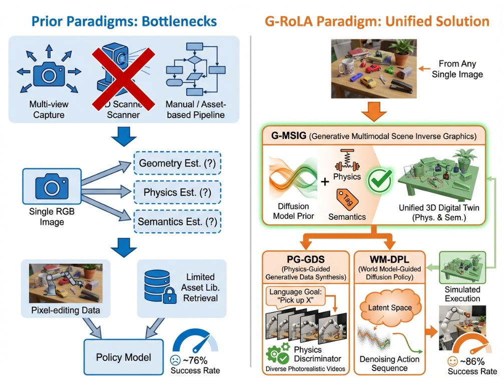
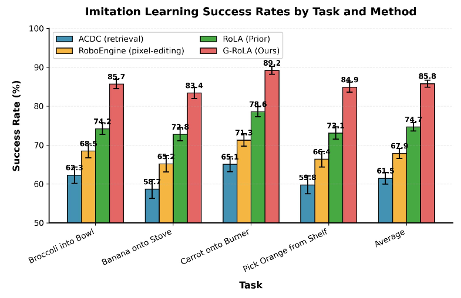

A three-stage framework connecting single-image scene recovery, physics-guided demonstration synthesis, and world-model policy learning. The workshop poster records the method and reported evaluations.
My role
Single author · research framing, framework design & poster
Status
CVPR 2026 workshop poster · ScaleBot / ReLearn
Generative world modelsScene reconstructionDemonstration synthesisRobot learning
Original workshop poster · Figure 2. Image-to-scene recovery, synthesized training experience, and policy learning form one pipeline.
The question: how much training experience can one image support?
Robot demonstrations are expensive to collect, while everyday images offer a much larger pool of possible training situations. The challenge is that one image leaves geometry, physical parameters, and useful actions only partially specified.
G-RoLA asks how a robot-learning pipeline could bridge those missing pieces: reconstruct a plausible scene, generate physically informed demonstrations, then use a world model to learn a policy. A language goal and a target embodiment help specify what the generated experience must support.

Original poster · Figure 1. The project connects visual input to training experience and a target robot policy.
Three stages, three information bottlenecks
I organized the framework around the information that must be introduced between a photograph and an executable policy.
Scene inversion · G-MSIG recovers geometry, physical parameters, and semantic structure using generative priors and physical constraints.
Demonstration synthesis · PG-GDS conditions generated visuomotor trajectories on the recovered scene, task goal, and embodiment, with physics-based guidance and filtering.
Policy learning · WM-DPL combines a latent dynamics model with diffusion-policy learning and planning. The poster explores lightweight adaptation using a small amount of real experience.
What the poster reports
The workshop poster reports the following imitation-learning comparison. The numbers describe that evaluation setting; the linked poster is the source for the reported experiments.
Imitation-learning success · original poster, Table 1
Training-data source
Success
ACDC (retrieval)
11.6%
RoboEngine (pixel)
13.2%
RoLA (prior)
76.4%
G-RoLA
86.5%

Original poster · Figure 3. The task-level comparison complements the aggregate result.
Which parts of the pipeline matter?
The poster also reports success-rate decreases when individual components are removed, linking the result to the scene prior, physical guidance, and world-model stage.
Component ablation · original poster, Table 2
Removed component
Reported decrease
Scene prior · G-MSIG
10.1 percentage points
Physics guidance · PG-GDS
8.3 percentage points
World model · WM-DPL
6.4 percentage points
My contribution and the next research question
I am the sole author of the workshop poster. I developed its research framing and three-stage framework and brought the method and experimental analysis together in the poster.
For my current research, the unresolved question is how to tell when generated experience is trustworthy enough to guide a physical action. A plausible reconstruction may still leave a hidden contact condition or affordance uncertain. I am interested in connecting world-model predictions to targeted observation and physical interaction, so that new evidence can correct the assumption the next action depends on.
Outcomes
A single-author workshop poster linking generative scene recovery, demonstration synthesis, and world-model policy learning.
Method, task-level results, and component ablations available in the original poster.
A robot can recognize a scene and still lack the evidence needed for its next action. I built a benchmark and diagnostic reference pipeline that connect view selection to the current manipulation command.
A symmetry-aware VLA framework that combines action generation, predicted consequences, and adaptive interaction. My interest is in policies that can respond when physical observations disagree with an expected trajectory.